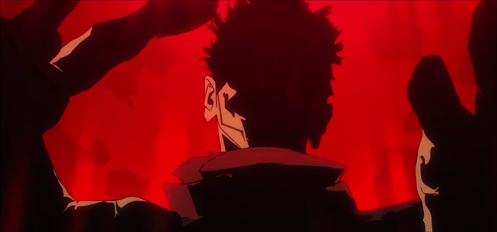

Adentrate en Jujutsu Kaisen
Explorá los elementos principales de una de las series de acción y fantasía oscura más populares del anime.
Un mundo donde las maldiciones acechan, y los hechiceros luchan por proteger lo que queda de la humanidad.

Explorá los elementos principales de una de las series de acción y fantasía oscura más populares del anime.
Divertidos, fastidiosos y honorables. Conoce a los personajes principales de esta historia!
Ver personajesNueva temporada en camino!
Video: trailer oficial de la cuarta temporada.